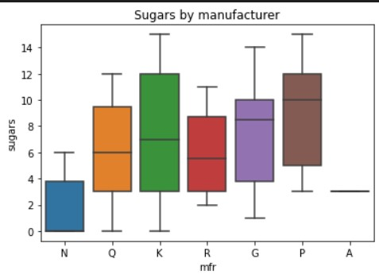

Try it: Manipulating Data With pandas
Contents
Try it: Manipulating Data With pandas#
The purpose of this activity is to expose students to libraries for preparing and manipulating “rectangular” data files (that is data which has both rows and columns, where each row has the same number of columns).
The next cell is one that will appear in some configuration as the first in nearly every notebook. It imports the key libraries we are going to use in our analysis and model building. In the first case, we will depend on pandas and numpy for our data manipulation and we’ll leverage matplotlib as our graphical library. We’ll also use the seaborn library to show off a few plots and visuals that are not quite as readily accessible with the matplotlib library.
# Setup code
# Import relevant libraries
import pandas as pd
import numpy as np
import matplotlib.pyplot as plt
import seaborn as sns
import sys
sys.path.append('..')
from src.data import load_data, convert_to_bool
# Limit the precision to 4 significant digits
pd.set_option('display.precision',4)
# Load up the housing dataset
housing_df = load_data('BostonHousing')
# Change the column to be more convenient (notice the space between . MEDV)
housing_df.rename(columns={'CAT. MEDV':'CAT_MEDV'},inplace=True)
convert_to_bool(housing_df, 'CAT_MEDV',inplace=True)
Business Context - Boston Housing#
Each record in the database describes a Boston suburb or town. The data was drawn from the Boston Standard Metropolitan Statistical Area (SMSA) in 1970. The attributes are defined as follows (taken from the UCI Machine Learning Repository):
CRIM: per capita crime rate by town
ZN: proportion of residential land zoned for lots over 25,000 sq.ft.
INDUS: proportion of non-retail business acres per town
CHAS: Charles River dummy variable (= 1 if tract bounds river; 0 otherwise)
NOX: nitric oxides concentration (parts per 10 million)
RM: average number of rooms per dwelling
AGE: proportion of owner-occupied units built prior to 1940
DIS: weighted distances to five Boston employment centers
RAD: index of accessibility to radial highways
TAX: full-value property-tax rate per 10,000
PTRATIO: pupil-teacher ratio by town
B: 1000(Bk−0.63)2 where Bk is the proportion of blacks by town
LSTAT: % lower status of the population
MEDV: Median value of owner-occupied homes in 1000s
CAT. MEDV: Is median value of owner-occupied home in tract above $30k (CAT.MEDV = 1) or not (CAT.MEDV = 0)
# Question 1
# Display the first 20 rows of the housing dataframe
# Question 2
# Output the items that are at least 70 years old
# Question 3
# Find the average age of houses in districts near the Charles river (CHAS=1) and those which don't
# Question 4
# Which town has the highest pupil to teach ratio?
# HINT: Find the highest value, then filter the list for items with this value (there are two of them)
Cereal#
Source: DATA ANALYSIS FOR STUDENT LEARNING (DASL)
Name: Name of cereal
mfr: Manufacturer of cereal where A = American Home Food Products; G = General Mills; K = Kelloggs; N = Nabisco; P = Post; Q = Quaker Oats; R = Ralston Purina
type: cold or hot
calories: calories per serving
protein: grams of protein
fat: grams of fat
sodium: milligrams of sodium
fiber: grams of dietary fiber
carbo: grams of complex carbohydrates
sugars: grams of sugars
potass: milligrams of potassium
vitamins: vitamins and minerals - 0, 25, or 100, indicating the typical percentage of FDA recommended
shelf: display shelf (1, 2, or 3, counting from the floor)
weight: weight in ounces of one serving
cups: number of cups in one serving
rating: a rating of the cereals calculated by Consumer Reports
Cereal Data#
Use the cereals dataset to answer the following questions
# Load the cereals data
cereal_df = load_data('Cereals')
cereal_df
# Question 5
# Plot the calories on a histogram
# Question 6
# Use a boxplot to compare cereal manufactures and the amount of sugar they put in their cereal
# Put a title on your plot 'Sugars by manufacturer'
Your plot should look like this

# Question 7
# Replace the single letters with the manufacturers full name, call the new column Manufacturer
# Display the new dataframe
# HINT: pandas offers a replace function that you can do this in one line
# https://pandas.pydata.org/pandas-docs/stable/reference/api/pandas.Series.replace.html?highlight=replace#pandas.Series.replace
# Question 8
# Calculate the average rating by Manufacturer (use the new Manufacturer column)
# Question 9
# Calculate the serving size (weight) in grams rather than ounces
# Store the value in a new column weight_grams
# Display the updated dataframe
# HINT: There are 28.35 grams in an ounce
# Question 10
# Using the new weight_grams column, calculate a new series sugars_pct which is the grams of sugar per gram of cereal
# Sort the dataframe from highest to lowest sugar_pct and display the dataframe
# HINT: Check out the pandas function `sort_values`
# https://pandas.pydata.org/pandas-docs/stable/reference/api/pandas.DataFrame.sort_values.html?highlight=sort_values#pandas.DataFrame.sort_values
# Look at the examples